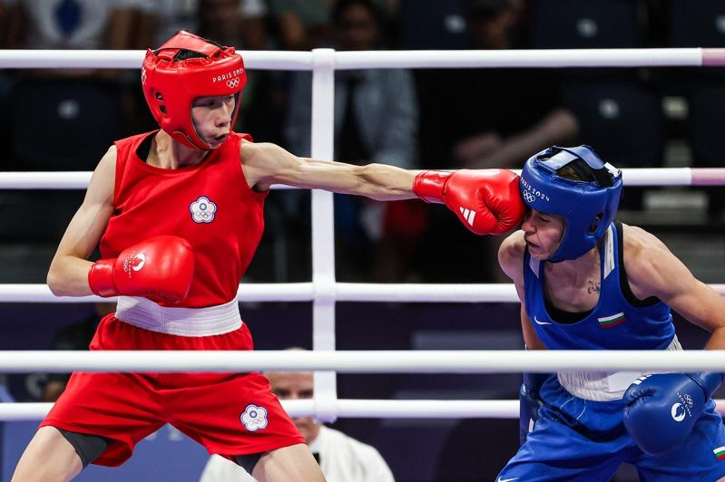

国际拳击总会召开记者会想要说明台湾选手林郁婷和阿尔及利亚选手克莉芙去年世锦赛遭取消资格的原因，然而无法提出新事证，言词又反复带有情绪化，会议过程惹毛不少记者，有外媒直评「如果奥运有搬砖砸脚项目，我们刚刚见证了金牌演出」。
国际拳击总会（IBA）昨日召开记者会，标榜说明林郁婷与克莉芙（Imane Khelif）撤销资格原因，吸引逾60家国际媒体采访，然而主席克列姆列夫（Umar Kremlev）只顾着批评国际奥会，强调IBA的清廉透明与自身的虔诚。
对于媒体提出证据的询问，首席执行官罗伯兹（Chris Roberts）推托给台湾、阿尔及利亚拳击协会，因收到消息要求不公开，仅说：「你们从字里行间，应该了解那是什么意思。」但无法透露任何检测结果。
反复提问无法获得有效答案，也让不少国际媒体无奈，纽约时报就撰文指出「一场混乱的会议，对拳击争议只提供少数澄清」，纽约邮报则表示「IBA没能揭露林郁婷、克莉芙世锦赛失格原因，只说『字里行间推敲』」。
美联社则指出，「拳击总会回答了一些疑问，但对于林郁婷、克莉芙的检测却掀起了更多疑问」，「时代」杂志则指出「IBA举办记者会说明拳击性别纷争，结果是一片混乱」。
报导中都指出IBA在会议上无法提供任何证据，流于情绪化，而国际奥会对于IBA的记者会内容也回复说：「一场混乱的闹剧，这个组织以及记者会的内容，就足以透露出他们的治理以及公信力。」
参与记者会的「The Athletic」记者奥尔巴赫（Nicole Auerbach）则表示：「这真是烂到主持人后来都出来跟部分记者道歉，说这是他参加过最丢脸的事情。」
「每日邮报」记者基根（Michael Keegan）则指出，IBA的记者会掀起的问题多过解答，「如果奥运有搬砖砸脚项目，我们刚刚见证了金牌演出」，而所有到场想要寻求解答的记者「如入五里雾中」。
巴黎奥运热话题
- 拜尔丝向她鞠躬 巴西金牌安德拉德 从贫民窟走向女王
- 郑钦文备战北美赛季 无缘担任中国队闭幕式掌旗官
- 感人瞬间 中国何冰娇摘银 颁奖台上却秀了西班牙徽章
- 美国队莱尔斯「龟派气功」庆夺金 日媒：跑最快的动漫迷
- 选手村太热没冷气 意大利金牌索性去公园睡觉